The Laplace Transform
1. 双边拉普拉斯变换；
2. 双边拉普拉斯变换的收敛域；
3. 零极点图；
4. 双边拉普拉斯变换的性质；
__ 系统函数；__ **** __ 单边拉普拉斯变换；__
9.0 引言 Introduction __ __
__ __ 傅里叶分析方法之所以在信号与 LTI 系统分析中如此有用，很大程度上是因为相当广泛的信号都可以表示成复指数信号的线性组合，而 复指数函数是一切 LTI 系统的特征函数。
__ 傅里叶变换是以复指数函数中的特例，即以 和 为基底分解信号的。对于更一般的复指数函数 和 ，也理应能以此为基底对信号进行分解。__
__ __ 将傅里叶变换推广到更一般的情况就是本章及下一章要讨论的中心问题。
__ __ 通过本章及下一章，会看到拉氏变换和 Ｚ 变换不仅具有很多与傅里叶变换相同的重要性质，不仅能适用于用傅里叶变换的方法可以解决的信号与系统分析问题，而且还能解决傅里叶分析方法不适用的许多方面。 拉氏变换与 Ｚ 变换的分析方法是傅里叶分析法的推广，傅里叶分析是它们的特例。
The Laplace Transform
__ __ 复指数信号 是一切连续时间 LTI 系统的特征函数。如果 LTI 系统的单位冲激响应为 ，则系统对 产生的响应是 :
显然当 时，就是傅里叶变换 。
称为 的 双边拉氏变换 ，其中 __ __
若 ， 则有 :
即： CTFT 是双边拉普拉斯变换在 或是在 σ ， ω 复平面上的 j ω 轴上的特例 。
__ __ 所以 拉氏变换是对傅里叶变换的推广 ， 的拉氏变换就是 的傅里叶变换。只要有合适的 存在，就可以使某些本来不满足狄里赫利条件的信号在引入 后满足该条件。即有些信号的傅氏变换不收敛而它的拉氏变换存在。
__ __ 拉氏变换比傅里叶变换有更广泛的适用性。
说明：一个连续信号如果存在傅立叶变换，
这个信号必须绝对可积，即
在此例中，要求 ， 才有傅里叶变换：
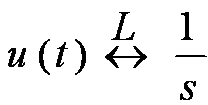
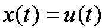
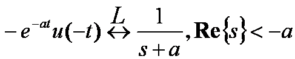
要求 ，信号 才有傅立叶变换存在
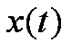
1 、比较例 1 和例 2 的两个信号，它们的拉氏变换的代数表示式是一样的，但使这个代数表示式成立的 S 域 却不相同。
结论： 给出一个信号的拉氏变换时， 代数表示式 和使该表示式成立的 变量 s 的范围 都应给出。
2 、 拉氏变换与傅里叶变换一样存在收敛问题。 并非任何信号的拉氏变换都存在，也不是 S 平面上的任何复数都能使拉氏变换收敛。
3 、使拉氏变换积分收敛的复数 S 的范围，称为拉氏变换的 收敛域 __ ，简记为__ ROC __ __ 。（ Region of Convergence ）
4 、 不同的信号可能会有完全相同的拉氏变换表达式，只是它们的收敛域不同。
5 、 只有拉氏变换表达式连同相应的收敛域，才能和信号建立一一对应的关系 。
6 、 如果拉氏变换的 ROC 包含 轴 ，则有
二 . ROC 的表示方法：（复平面 )
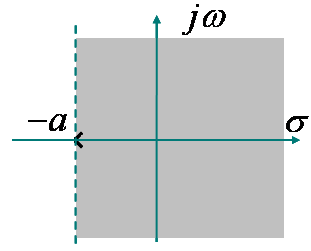
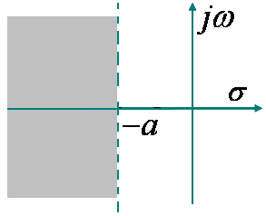
有理函数 X(S) 的 ROC 的性质： 1 ） X(s) 的 ROC 在 s 平面内由平行于 轴的带状区域组成；
2 ）右边信号的 ROC 在 s 平面的右半部；
3 ）左边信号的 ROC 在 s 平面的左半部；
若 是右边信号 , , 在 ROC 内 ，则有 绝对可积，即：
表明 也在收敛域内，右边信号的 ROC 在极点的右边。
__ __ 若 是左边信号，定义于 , 在 ROC 内， ，则
表明 也在收敛域内 。 左边信号的 ROC 在最左极点的的左边
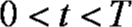
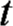
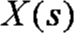
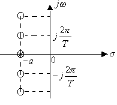
__ __ 显然 在 也有一阶零点，由于零极点相抵消，致使在整个 S 平面上无极点。

当 时，上述 ROC 有公共部分，
当 时，上述 ROC 无公共部分，表明 不存在。
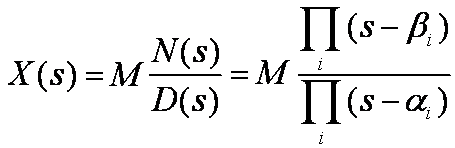
__ __ 前面的例子给出的拉氏变换式都是关于 s 的两个多项式之比，这种形式的拉氏变换称为有理拉氏变换。
令分子多项式 的根称为 的 零点 ，用 表示
令分母多项式 的根称为 的 极点 ，用 表示
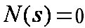
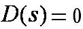
__ __ 的零极点图： 在 s 平面标出 的零点和极点。
例：画出 的零极点图
__ __ 在有限 S 平面内， 的零点和极点可以完全表征 的代数表示式。（ 常数因子除外 ）
例：已知 的零、极点分布如图，且 写出 的表示式。

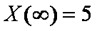
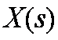
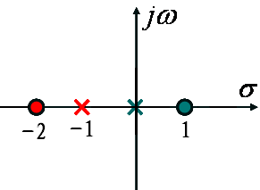
__ __ 零极点图及其收敛域可以表示一个 最多与真实的 相差一个常数因子 。
__ 因此，__ 零极点图是拉氏变换的图示方法 。
例：画出
的零极点图
可以形成三种 ROC ：
__ __ ROC ： 此时 是右边信号。
__ __ ROC ： 此时 是左边信号。
__ __ ROC ： 此时 是双边信号
Properties of the Laplace Transform
__ __ 拉氏变换与傅氏变换一样具有很多重要的性质。这里只着重于 ROC 的讨论。
1. 线性 （ Linearity ）：
__ __ 当 与 无交集时，表明 不存在。
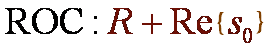
- 2. 时移性质 （ Time Shifting ） :
- 3. S 域平移 （ Shifting in the s-Domain ） :
__ __ 表明 的 ROC 是将 的 ROC 平移了一个 __ 。__
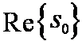
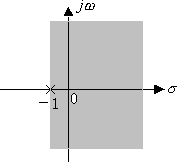
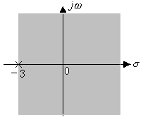
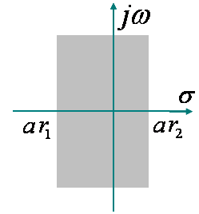
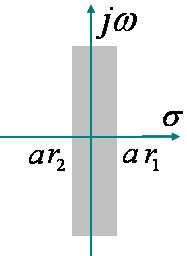
__ __ 4. 时域尺度变换 （ Time Scaling ） :
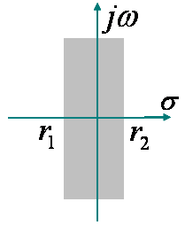
求 的拉氏变换及 ROC
__ __ 可见： 若信号在时域尺度变换，其拉氏变换的 ROC 在 S 平面上作相反的尺度变换。
5. 共轭对称（ Conjugation ）性 ：
如果 是实信号，且 在 有极点（或零点），则 一定在 也有极点或零点。这表明： 实信号的拉氏变换其复数零、极点必共轭成对出现。
__ __ 6. 卷积性质 : （ Convolution Property ）
__ __ 原因是 与 相乘时，发生了零极点相抵消的现象。当被抵消的极点恰好在 ROC 的边界上时，就会使收敛域扩大 。
7. 时域微分 : （ Differentiation in theTime Domain ）
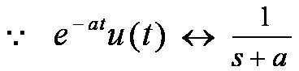

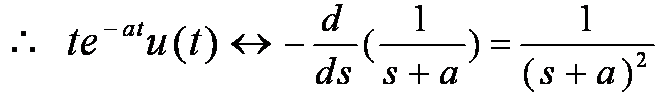
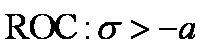
8. S 域微分 : （ Differentiation in the s-Domain ）
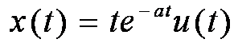
例 . 求 的拉氏变换
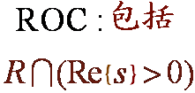
__ __ 9. 时域积分 : （ Integration in the Time Domain ）
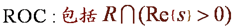
__ 10__ . 初值与终值定理 :
（ The Initial- and Final- Value Theorems)
例：已知因果信号 的拉氏变换
__ 求 和__
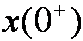
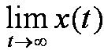
时 ，且在 不包含奇异函数。
将 在 展开为 Taylor 级数有：
是因果信号，且在 无奇异函数 ,
除了 在 可以有一阶极点外，其它极点均在 S 平面 的左半平面（即 保证 有终值 ）。 故 的 ROC 中必包含 轴。表明
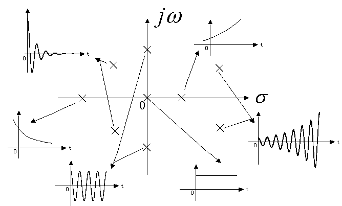
若 在 ROC 内，则有 :
The Inverse Laplace Transform
当 从 时 , 从
拉氏反变换表明 :
__ __ 可以被分解成复振幅为
__ 的复指数信号 的线性组合。__
对有理函数形式的 求反变换一般有两种方法 , 即 部分分式展开法 和 留数法 。
__ __ 1. 将 展开为部分分式。 2. 根据 的 ROC ，确定每一项的 ROC 。 3. 利用常用信号的变换对与拉氏变换的性质 , 对每一项进行反变换。
确定其可能的收敛域及所对应信号的属性。
9.4 由零极点图对傅里叶变换几何求值
Geometric Evaluation of the Fourier Transform from the Pole-Zero Plot
可以用零极点图表示 的特征 。当 ROC 包括 轴时，以 代入
就可以得到 。以此为基础可以用几何求值的方法从零极点图求得 的特性。这在定性分析系统频率特性时有很大用处。
令 即在 S 平面中 s 沿虚轴移动，可得：
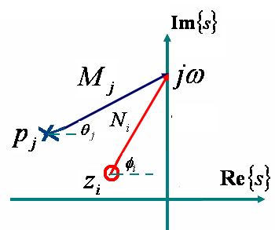
例：已知 ，用几何法确定傅立叶变换的幅频和相频特性。
注： 用几何法确定傅立叶变换的意义：
__ 由零极点图来近似观察傅立叶变换的整体特性。__
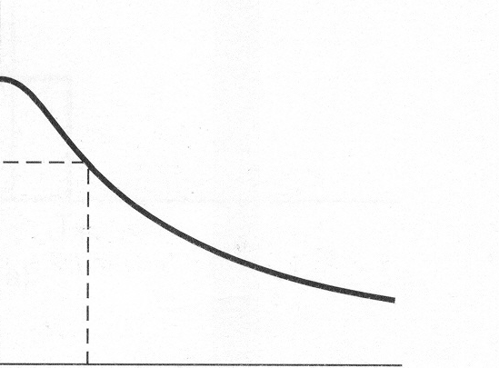
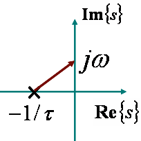
__ __ 随着 ， 单调下降 ，
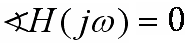
__ __ 随着 ， 趋向 。
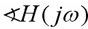

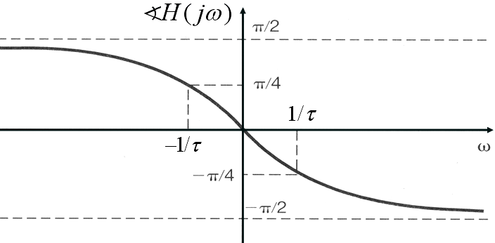
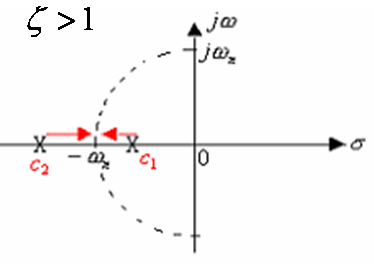
__ __ 1. 当 时， 有两个实数极点， 随着 的增加而单调下降，而 则由
__ 时为__ 0 变到 的 。
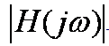
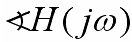
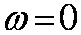
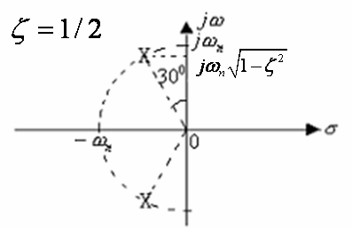
__ __ 2. 当 时，则二阶 极点分裂为 共轭复数极点， 且随 的减小而逐步靠近 轴。极点运动的轨迹 —— 根轨迹是一个半径为 的圆周 。
__ __ 由于第 2 象限的极点矢量变得很短，因而会使 出现峰值。其峰点位于
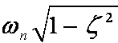
随着 ，位于第 2 象限的极点矢量比第 3 象限的极点矢量更短，因此它对系统特性的影响较大。
__ __ 该系统的 在任何时候都等于 1 ，所以称为 全通系统 。
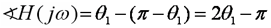
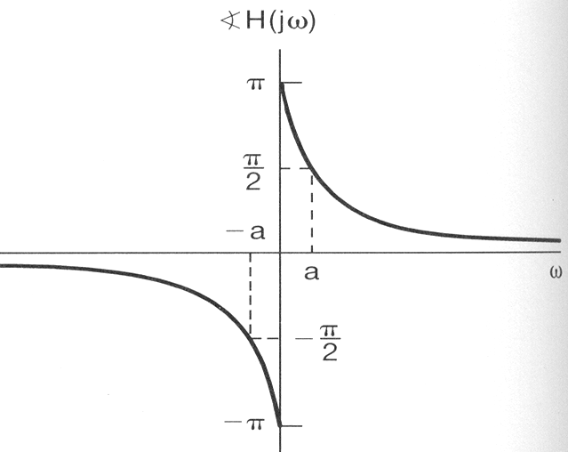
__ __ 考查两个系统，它们的极点相同，零点分布关于 轴对称。其中一个系统的零点均在左半平面，另一个系统的零点均在右半平面。
__ __ 显然这两个系统的幅频特性是相同的。但零点在左半平面的系统其相位总小于零点在右半平面的系统。因此将 零极点均位于左半平面的系统称为最小相位系统。
__ __ 工程应用中设计的各种频率选择性滤波器，如： Butterworth 、 Chebyshev 、 Cauer 滤波器都是最小相位系统。
从本质上讲 系统的特性是由系统的零、极点分布决定的 。对系统进行优化设计，实质上就是优化其零、极点的位置。
当工程应用中要求实现一个非最小相位系统时，通常采用将一个最小相位系统和一个全通系统级联来实现。
Some Laplace Transform Pairs
9.7 用拉氏变换分析与表征 LTI 系统
Analysis and Characterized of LTI Systems Using the Laplace Transform
__ __ 以卷积特性为基础，可以建立 LTI 系统的拉氏变换分析方法，即
__ __ 其中 是 的拉氏变换，称为 系统函数 或 转移函数 。
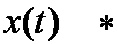
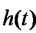
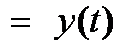
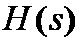
如果 时 ，则 系统是因果的 。
__ __ 连同相应的 ROC 也能完全描述一个 LTI 系统。系统的许多重要特性在 及其 ROC 中一定有具体的体现。
二 . 用系统函数表征 LTI 系统：
__ __ 因此， 因果系统 的 是右边信号，结论 ：其 的 ROC 必位于最右极点右边 。
__ __ 应该强调指出，由 ROC 的特征，反过来并不能判定系统是否因果。 ROC 是最右边极点的右边并不一定系统因果。
因果性判定：
If
Then 系统是因果的。
__ __ 如果系统稳定，则有 。因此 必存在。意味着 的 ROC 必然包括 轴。
系统稳定性判定：
if 系统函数 的 ROC 包括 轴， then 系统稳定。
因果系统稳定性判定：
if 的 全部极点必须位于 S 平面的左半边， Then 具有有理 的因果系统稳定。
例 1 ：某系统的
显然该系统是因果的，确定系统的稳定性 。
显然， ROC 是最右边极点的右边。
__ __ 的 ROC 是最右边极点的右边，但 是非有理函数， __ ，系统是非因果的。__
__ __ 由于 ROC 包括 轴，该系统仍是稳定的。
__ __ 仍是非有理函数， ROC 是最右边极点的右边， 但由于 ，是因果的。 __ __
如果 LTI 系统的系统函数是有理函数，且全部极点位于 S 平面的左半边，则 因果 系统是稳定的。
2. 如果 LTI 系统的系统函数是有理函数，且系统因果，则系统函数的 ROC 位于最右边极点的右边。
__ 3.__ 如果 LTI 系统是稳定的，则系统函数的 ROC 必然包括 轴。
三 . 由 LCCDE 描述的 LTI 系统的系统函数：
的 ROC 需要由系统的相关特性来确定。
1 ） 如果已知 LCCDE 描述的系统是因果的，则 的 ROC 必是最右边极点的右边。
2 ）如果已知 LCCDE 描述的系统是稳定的，则 的 ROC 必包括 轴 。
例 1: 已知 LTI 系统的输入 ，输出 ，试确定系统函数及系统的其它性质，以及表征系统的微分方程。 __ __
例 2 ：一因果 LTI 系统，其输入和输出满足：
微分方程：
求系统函数及收敛域；画出零极点图；判定系统稳定性？
自学。请关注例 9.25 、 9.26 、 9.27
__ __ 五 . Butterworth 滤波器 :
__ __ 通常 Butterworth 滤波器的特性由频率响应的模平方函数给出。对 N 阶 Butterworth 低通滤波器有：
Butterworth 滤波器的冲激响应是实信号 ，
将 函数拓展到整个 S 平面有：
表明 N 阶 Butterworth 低通滤波器模平方函数 全部 2N 个极点均匀分布在半径为 的圆周上
极点分布的特征：
2N 个极点等间隔均匀分布在半径为 的圆周上 。
__ __ 轴上不会有极点。当 N 为奇数时在实轴上有极点， N 为偶数时实轴上无极点。
相邻两极点之间的角度差为 。
极点分布总是关于原点对称的。
__ __ 要实现的滤波器应该是因果稳定系统，因此位于左半平面的 N 个极点一定是属于 的。
__ __ 据此，确定出 后，也就可以综合出一个 Butterworth 滤波器。
9.8 系统函数的代数属性与系统的级联并联型结构
System Function Algebra and Block Diagram Representations
二 . LTI 系统的级联和并联型结构 ：
LTI 系统可以由一个 LCCDE 来描述。
将 的分子和分母多项式因式分解
__ __ 这表明： 一个 N 阶的 LTI 系统可以分解为若干个二阶系统和一阶系统的级联。在 N 为偶数时，可全部组合成二阶系统的级联形式。
如果 N 为奇数，则有一个一阶系统出现。
__ __ 将 展开为部分分式 ( 假定 的分子阶数不高于分母阶数，所有极点都是单阶的），则有：
将共轭成对的复数极点所对应的两项合并 :
__ __ N 为偶数时又可将任意两个一阶项合并为二阶项，由此可得出系统的并联结构：
The Unilateral Laplace Transform
__ __ 单边拉氏变换是双边拉氏变换的特例。也就是因果信号的双边拉氏变换。单边拉氏变换对分析 LCCDE 描述的增量线性系统具有重要的意义。
__ __ 如果 是因果信号，对其做双边拉氏变换和做单边拉氏变换是完全相同的。
__ __ 单边拉氏变换也同样存在 ROC 。其 ROC 必然遵从因果信号双边拉氏变换时的要求，即： 一定位于最右边极点的右边。
__ __ 正因为这一原因，在讨论单边拉氏变换时，一般不再强调其 ROC 。
__ __ 单边拉氏变换的反变换一定与双边拉氏变换的反变换相同。
__ __ 与 不同，是因为 在 的部分对 有作用而对 没有任何作用所致。
单边拉氏变换的大部分性质与双边拉氏变换相同，但也有几个不同的性质。
1. 时域微分 （ Differentiation in the Time Domain ）
2. 时域积分 （ Integration in the Time Domain ）
3. 时延性质 （ Time Shifting ）
__ __ 是因果信号时，单边拉氏变换的时延特性与双边变换时一致 。
三 . 利用单边拉氏变换求解增量线性系统 :
__ __ 单边拉氏变换特别适合于求解由 LCCDE 描述的增量线性系统。
其中，第一项为 强迫响应 ，其它为 自然响应。
9.10 小结 Summary
拉氏变换是傅氏变换的推广，在 LTI 系统分析中特别有用。它可以将微分方程变为代数方程，这对分析系统互联、系统结构、用系统函数表征系统、分析系统特性等都具有重要意义。
ROC 是双边拉氏变换的重要概念。离开了 ROC ，信号与双边拉氏变换的表达式将不再有一一对应的关系。
__ __ 作为拉氏变换的几何表示，零极点图对分析系统的频率特性、零极点分布与系统特性的关系具有重要意义。从本质上讲，系统的特性完全是由系统函数的零极点分布决定的
__ 拉氏变换的许多性质对于在变换域分析__ LTI 系统，具有重要作用。
__ 作为双边拉氏变换的特例，单边拉氏变换特别适用于分析增量线性系统。__
作业：
9.1 、 9.5 、 9.8 、 9.14 、 9.21 、 9.22 、 9.23 、 9.33 、 9.47 、 9.48